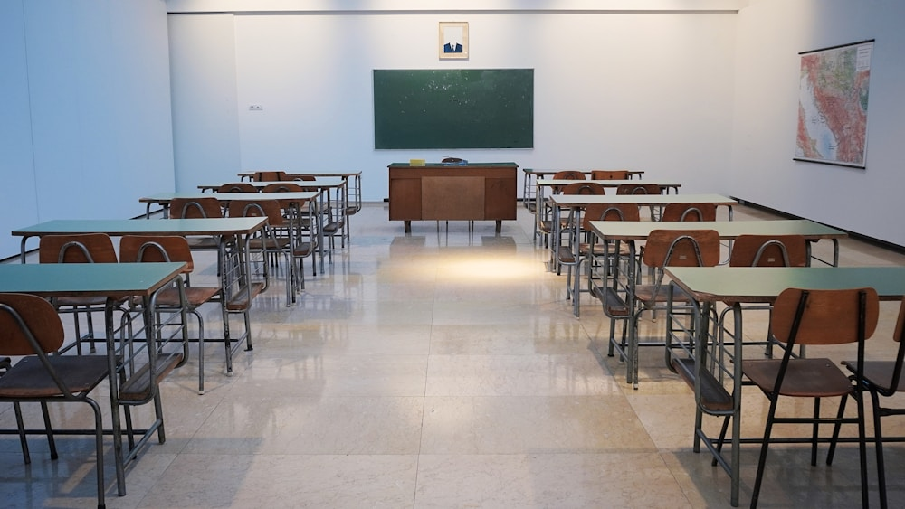
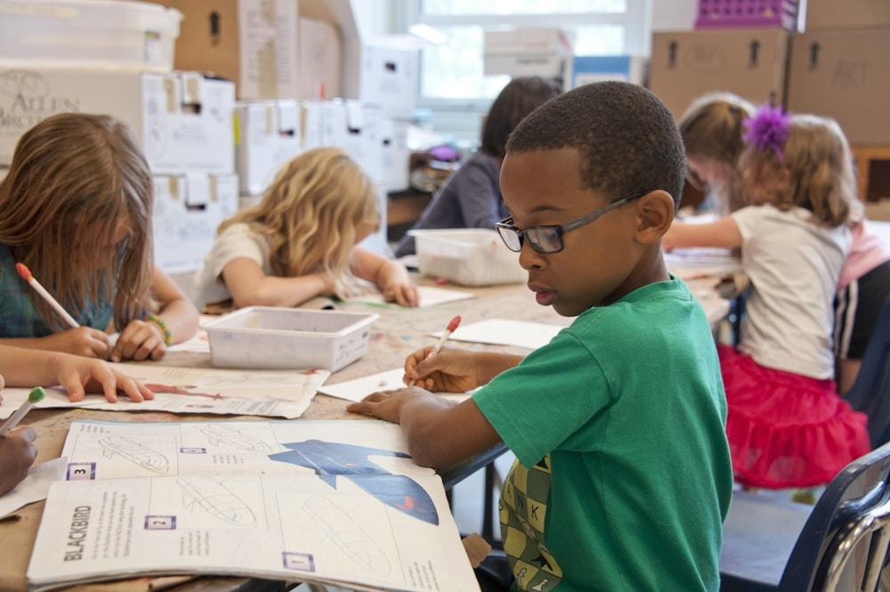

Primary Wing
Foundational Learning
Focuses on curiosity, language fluency, basic mathematics, socialization, and creative expression in a warm setting.
Empowering young minds through disciplined learning, character building, modern science & computer laboratories, and holistic development in Shahnewazpur, Taraiya, Saran.
Dedicated to nurturing academic brilliance, moral integrity, leadership values, and future-ready skills.
Established in Shahnewazpur, Taraiya (Saran), Bihar, National Academy provides a safe, intellectually stimulating, and disciplined environment where every child is encouraged to reach their highest potential.
Our pedagogical framework bridges traditional ethical values with modern educational methodologies, focusing on concept clarity, critical thinking, sportsmanship, and technological literacy.
"Education is not merely the acquisition of knowledge, but the development of character, compassion, and discipline. At National Academy, we strive to ignite the flame of lifelong learning in every child."
State-of-the-art facilities crafted to provide an enriching, interactive, and holistic campus life.
Equipped with interactive learning tools and audio-visual displays to make complex topics intuitive and engaging.
Dedicated modern computers with high-speed internet providing hands-on practical digital literacy and fundamentals.
Fully equipped practical physics, chemistry, and biology setups fostering scientific temperament and inquiry.
Spacious grounds supporting cricket, football, volleyball, athletics, and yoga for active physical well-being.
Curated repository of academic books, reference guides, children's literature, and reading materials.
Continuous surveillance, secure boundary fencing, and trained staff ensuring complete student safety and discipline.
Structured stages designed to meet the evolving developmental needs of growing learners.
Focuses on curiosity, language fluency, basic mathematics, socialization, and creative expression in a warm setting.
Deepens subject mastery across sciences, mathematics, humanities, and languages with project-based activities.
Rigorous academic curriculum for Class 9 & 10 with conceptual clarity, mock examinations, and comprehensive career guidance.
A glimpse into daily academic rigor, celebrations, laboratory sessions, and extracurricular life.

